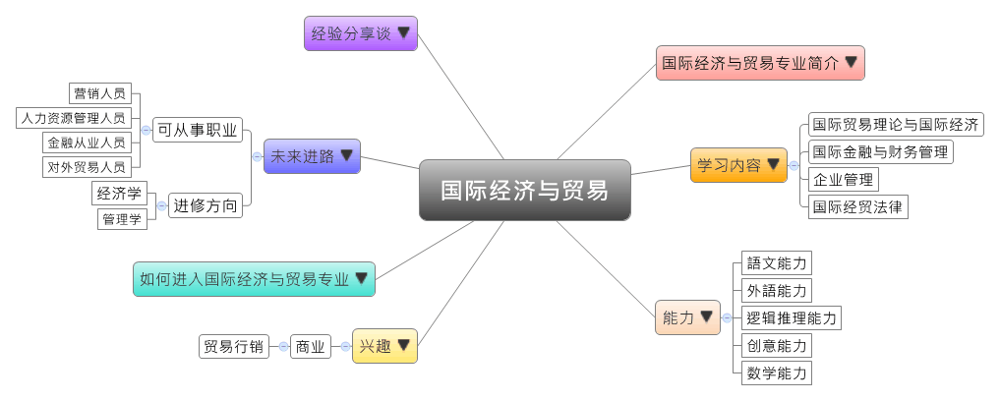

- 专业大观园
-

- 专业介绍
-
什么是国际经济与贸易？
国际经济与贸易，是因应国家经济发展之需求应运而生的一门学科，所培养的绝非只是未来要在外企上班的族群；它更注重的是以中国当代经济体系与贸易发展为本，向外拓展至全球经贸现状的宏观视野；面对社会，为人民服务的责任心，对创业的理想和愿意艰苦实践的事业心；最后是对公司内部组织的管理知识和分析能力。
目前中国对外贸易多会谈到惯例和世界贸易组织WTO。根据WTO月度统计测算，我国的外贸出口状况仍是好于全球主要经济体和新兴市场国家。在经贸稳定成长的现状中，要如何在市场变化快速的环境里能做出理性分析；如何以公司为出发点做出合宜的国际策略、行销管理、财务管理……等等，这时即需要国际经济与贸易专业的人才。
当然，也因为是以国际为导向的专业，外语能力也必须是列入核心培养的课程之一。
国际经济与贸易电子实操课 国际经济与贸易实训－单证操作
- 学习内容
-
国际经济与贸易专业学生主要学习国贸理论与国际经济、国际金融与财务管理、企业管理、国际经贸法律四个面向的知識，并加入实践环节，如：模拟实训和毕业实习，以让学生能在毕业前便可接轨未来工作职场。
本专业的核心课程主要有：外贸英语、西方经济学、管理学、国际贸易、国际金融、国际市场营销、电子商务概论、中国对外贸易政策法规、国际贸易规则与惯例……等。国际经济与贸易专业是从经济学中分化出来的应用经济学科。
本专业可以习得的知识与获得之能力、技能列点：第一，掌握基本经济学理论，以及国际贸易基本原理与设计方法；第二，具有管理贸易、市场营销和国际经济法……等等的基本知识；第三，会使用统计或会计方法进行分析；第四，了解国内经济与国际经济的走向与局势；第五，熟练第二外语，具备进阶听、说、读、写能力。
- 能力
-
国际经济与贸易专业学生，需具备以下能力：
相关性向能力 说明 语文能力  能了解金融专业知识
能了解金融专业知识
各类文体撰写之文字表达能力
能了解经济与贸易工作基本政策、法规创意能力 根据不同的经济贸易环境，拟定执行策略外语能力 能用外语进行商务洽谈
具备撰写外语商务文件的文字表达能力逻辑推理能力 能够有组织的规划安排一切事务
搜集经济与贸易相关资料，推估最新国贸情势数学能力 会计处理的计算能力
- 兴趣
-
若你对下列活动或事物有高度兴趣，可考虑进入国际经济与贸易专业学习：
商业 贸易营销 面对挑战
规划和组织
能夠獲利之活動
说服和影响他人
精确的数字运算
有条不紊地处理细节
- 如何进入此专业
-
下面列举开设国际经济与贸易专业的重点大学院校：
- 未来进路
-
可从事职业
国际经济与贸易专业学生毕业后可从事的工作范围广，在公众面前树立并强化公司的品牌形象，在市场竞争中赢得先机，而只要有产品和服务在出售，就会有销售的职位在招聘，这便得仰赖公关、营销人员；另外，销售中国产品给国外客户，为国内客户寻找国外货源，抑或组织国际贸易货物物流…..等，需要的就是对外贸易人才。国际经济贸易专业学生，在工作职场上皆能发挥国际经贸学识、口语表达等专长，主要就业方向列举如下：
行业 职业 市场营销 公关、营销人员 企业内部 公司行政人员、后勤人员、HR（人力资源管理人员） 财务金融 金融从业人员、保险从业人员、投资理财专员 外贸、进出口产业 对外贸易人员、报关员 进修方向以下列举国际经济与贸易专业毕业生可以继续修读之学科门类、一级学科与硕士点：
学科门类 一级学科 硕士点 管理学 工商管理国际商务、审计学、资产评估 经济学 经济学统计学、应用统计、国防经济、数量经济学、劳动经济学、产业经济学、区域经济学、国民经济学、应用经济学、人口资源与环境经济学、世界经济、西方经济学、经济史、经济思想史、政治经济学、理论经济学 金融学金融学、保险 财政学财政学、税务 经济与贸易国际贸易学
- 经验分享谈
-
全球华人首富——李嘉诚
李嘉诚，长江实业(集团)有限公司及和记黄埔有限公司董事局主席，全球华人首富，全世界华人最成功的企业家。14岁投身商界，22岁正式创业，半个世纪的奋斗过程始终以"超越"为主要关键字，一步一步的超越平凡、超越对手、超越巅峰、超越自我，于是世人称之为"超人"。据彭博亿万富豪指数，截至2014年12月22日，李嘉诚以294亿美元重夺亚洲首富宝座。
李嘉诚其实可谓是国际商务专业领域的领头人，他是创业精英、商界巨头，在其创业发展路上，并购多家公司，实现了企业的巨大超越。经过不断发展壮大，李嘉诚旗下的"长实"集团及其附属公司，现已发展成为在香港以至世界具有领导地位的地产、国际集装箱货柜码头业和投资发展的举足轻重的集团公司。市值已超过2700亿港元。业务经营范围包括地产发展、金融、贸易、货柜码头、运输业、能源、电力、通讯、卫星广播、酒店业、零售业等。
成功没有偶然。李嘉诚从十几岁开始，便勤劳学习、进修技能，白天在玩具制造公司担任推销员，晚上在夜校补习文化课，逐步升任塑料玩具厂的总经理，而后更把握时机，创办自己的塑胶厂。几十年来，勤劳奋勇、不断向前的精神一直贯穿他的奋斗经历之中，正是这样的勤奋刻苦、努力学习，才有今日之成就。李嘉诚说，在20岁前，事业上的成功百分之百靠双手勤劳换来；20岁至30岁之前，10%靠运气好，90%仍是由勤劳得来。李嘉诚在国际商务各领域的打拼与奋斗，诠释了勤劳的精神造就的商业传奇。【资料来源：Cary. 国际商务之李嘉诚[EB/OL].新浪博客，2010-03-02〔2015-01-18〕.】